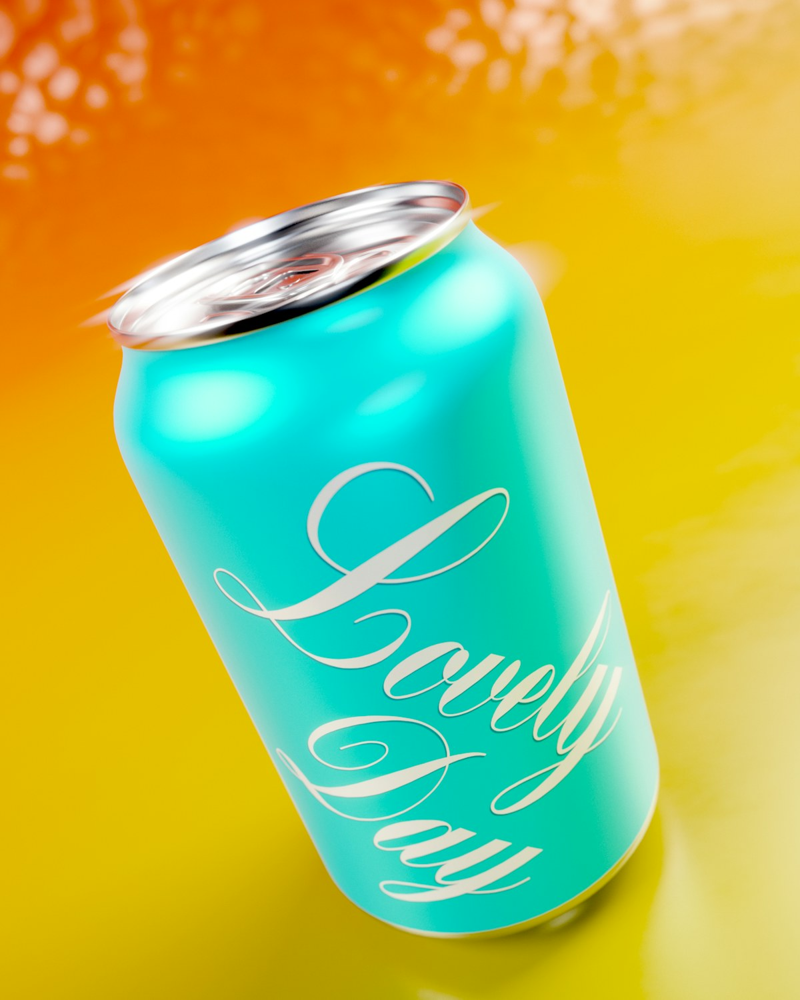
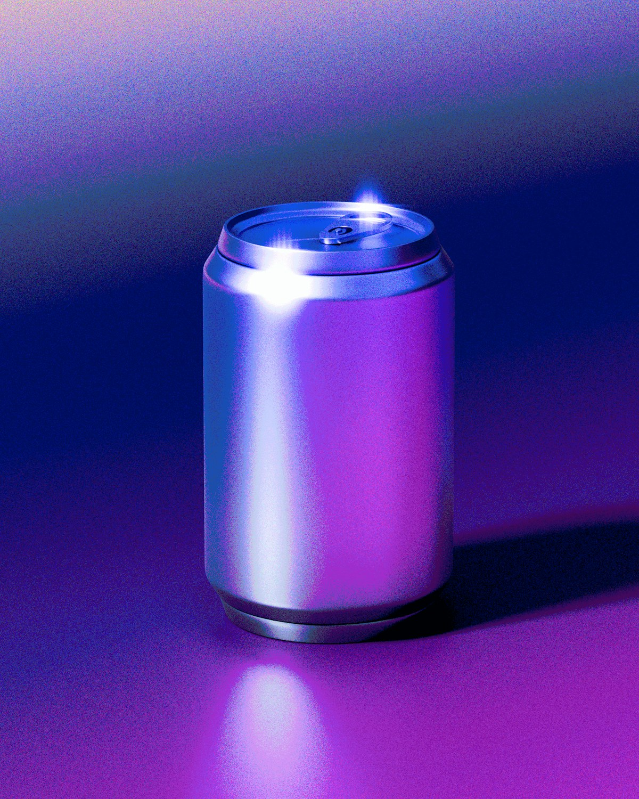
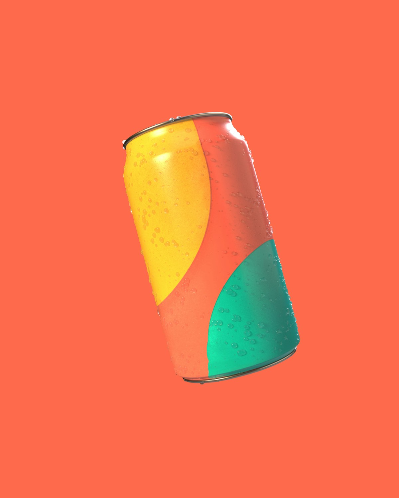
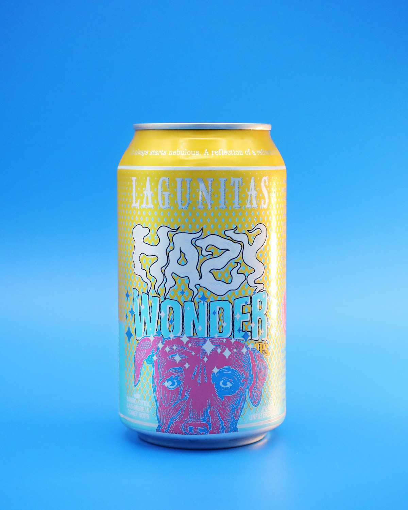

Colour first, label on intent.

Guava & lime · 4.2% · 355 ml

Bohemian · 5.0% · 330 ml

Blood orange · 4.6% · 355 ml

Citra · Mosaic · 6.2% · 355 ml
Hover a cardScroll or tap a card to clear the fluted pane.